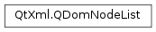

QDomNodeList¶
Synopsis¶
Detailed Description¶
The
PySide2.QtXml.QDomNodeListclass is a list ofPySide2.QtXml.QDomNodeobjects.Lists can be obtained by
QDomDocument.elementsByTagName()andQDomNode.childNodes(). The Document Object Model (DOM) requires these lists to be “live”: whenever you change the underlying document, the contents of the list will get updated.You can get a particular node from the list with
PySide2.QtXml.QDomNodeList.item(). The number of items in the list is returned byPySide2.QtXml.QDomNodeList.length().For further information about the Document Object Model see Level 1 and Level 2 Core. For a more general introduction of the DOM implementation see the
PySide2.QtXml.QDomDocumentdocumentation.
-
class
PySide2.QtXml.QDomNodeList¶ -
class
PySide2.QtXml.QDomNodeList(arg__1) Parameters: arg__1 – PySide2.QtXml.QDomNodeListCreates an empty node list.
Constructs a copy of
n.
-
PySide2.QtXml.QDomNodeList.at(index)¶ Parameters: index – PySide2.QtCore.intReturn type: PySide2.QtXml.QDomNodeThis function is provided for Qt API consistency. It is equivalent to
PySide2.QtXml.QDomNodeList.item().If
indexis negative or ifindex>=PySide2.QtXml.QDomNodeList.length()then a null node is returned (i.e. a node for whichQDomNode.isNull()returns true).
-
PySide2.QtXml.QDomNodeList.count()¶ Return type: PySide2.QtCore.intThis function is provided for Qt API consistency. It is equivalent to
PySide2.QtXml.QDomNodeList.length().
-
PySide2.QtXml.QDomNodeList.isEmpty()¶ Return type: PySide2.QtCore.boolReturns
trueif the list contains no items; otherwise returnsfalse. This function is provided for Qt API consistency.
-
PySide2.QtXml.QDomNodeList.item(index)¶ Parameters: index – PySide2.QtCore.intReturn type: PySide2.QtXml.QDomNodeReturns the node at position
index.If
indexis negative or ifindex>=PySide2.QtXml.QDomNodeList.length()then a null node is returned (i.e. a node for whichQDomNode.isNull()returns true).See also
-
PySide2.QtXml.QDomNodeList.length()¶ Return type: PySide2.QtCore.intReturns the number of nodes in the list.
-
PySide2.QtXml.QDomNodeList.__ne__(arg__1)¶ Parameters: arg__1 – PySide2.QtXml.QDomNodeListReturn type: PySide2.QtCore.boolReturns
truethe node listnand this node list are not equal; otherwise returnsfalse.
-
PySide2.QtXml.QDomNodeList.__eq__(arg__1)¶ Parameters: arg__1 – PySide2.QtXml.QDomNodeListReturn type: PySide2.QtCore.boolReturns
trueif the node listnand this node list are equal; otherwise returnsfalse.
-
PySide2.QtXml.QDomNodeList.size()¶ Return type: PySide2.QtCore.intThis function is provided for Qt API consistency. It is equivalent to
PySide2.QtXml.QDomNodeList.length().
© 2018 The Qt Company Ltd. Documentation contributions included herein are the copyrights of their respective owners. The documentation provided herein is licensed under the terms of the GNU Free Documentation License version 1.3 as published by the Free Software Foundation. Qt and respective logos are trademarks of The Qt Company Ltd. in Finland and/or other countries worldwide. All other trademarks are property of their respective owners.